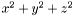

voronoicell_base< n_option > Class Template Reference
A class encapsulating all the routines for storing and calculating a single Voronoi cell.
More...
#include <cell.hh>
|
Public Member Functions |
| | voronoicell_base () |
| | ~voronoicell_base () |
| void | init (fpoint xmin, fpoint xmax, fpoint ymin, fpoint ymax, fpoint zmin, fpoint zmax) |
| void | init_octahedron (fpoint l) |
| void | init_tetrahedron (fpoint x0, fpoint y0, fpoint z0, fpoint x1, fpoint y1, fpoint z1, fpoint x2, fpoint y2, fpoint z2, fpoint x3, fpoint y3, fpoint z3) |
| void | init_test (int n) |
| void | add_vertex (fpoint x, fpoint y, fpoint z, int a) |
| void | add_vertex (fpoint x, fpoint y, fpoint z, int a, int b) |
| void | add_vertex (fpoint x, fpoint y, fpoint z, int a, int b, int c) |
| void | add_vertex (fpoint x, fpoint y, fpoint z, int a, int b, int c, int d) |
| void | add_vertex (fpoint x, fpoint y, fpoint z, int a, int b, int c, int d, int e) |
| void | draw_pov (ostream &os, fpoint x, fpoint y, fpoint z) |
| void | draw_pov (const char *filename, fpoint x, fpoint y, fpoint z) |
| void | draw_pov (fpoint x, fpoint y, fpoint z) |
| void | draw_pov_mesh (ostream &os, fpoint x, fpoint y, fpoint z) |
| void | draw_pov_mesh (const char *filename, fpoint x, fpoint y, fpoint z) |
| void | draw_pov_mesh (fpoint x, fpoint y, fpoint z) |
| void | draw_gnuplot (ostream &os, fpoint x, fpoint y, fpoint z) |
| void | draw_gnuplot (const char *filename, fpoint x, fpoint y, fpoint z) |
| void | draw_gnuplot (fpoint x, fpoint y, fpoint z) |
| void | check_relations () |
| void | check_duplicates () |
| void | construct_relations () |
| fpoint | volume () |
| fpoint | maxradsq () |
| int | number_of_faces () |
| void | print_edges () |
| void | perturb (fpoint r) |
| void | facets (ostream &os) |
| void | facets () |
| void | facets (const char *filename) |
| void | facet_statistics (ostream &os) |
| void | facet_statistics () |
| void | facet_statistics (const char *filename) |
| bool | nplane (fpoint x, fpoint y, fpoint z, fpoint rs, int p_id) |
| bool | nplane (fpoint x, fpoint y, fpoint z, int p_id) |
| bool | plane (fpoint x, fpoint y, fpoint z, fpoint rs) |
| bool | plane (fpoint x, fpoint y, fpoint z) |
| bool | plane_intersects (fpoint x, fpoint y, fpoint z, fpoint rs) |
| bool | plane_intersects_guess (fpoint x, fpoint y, fpoint z, fpoint rs) |
| void | label_facets () |
| void | neighbors (ostream &os) |
| void | check_facets () |
Data Fields |
| int ** | ed |
| int * | nu |
| int | current_vertices |
| int | current_vertex_order |
| int | current_delete_size |
| int | current_delete2_size |
| fpoint * | pts |
| int | p |
| int | up |
| suretest | sure |
Friends |
|
class | neighbor_track |
Detailed Description
template<class n_option>
class voronoicell_base< n_option >
A class encapsulating all the routines for storing and calculating a single Voronoi cell.
This class encapsulates all the routines for storing and calculating a single Voronoi cell. The cell can first be initialized by the init() function to be a rectangular box. The box can then be successively cut by planes using the plane function. Other routines exist for outputting the cell, computing its volume, or finding the largest distance of a vertex from the cell center. The cell is described by two arrays. pts[] is a floating point array which holds the vertex positions. ed[] holds the table of edges, and also a relation table that determines how two vertices are connected to one another. The relation table is redundant, but helps speed up the computation. The function check_relations() checks that the relational table is valid.
Definition at line 101 of file cell.hh.
Constructor & Destructor Documentation
template<class n_option >
Constructs a Voronoi cell and sets up the initial memory.
Definition at line 15 of file cell.cc.
template<class n_option >
The voronoicell destructor deallocates all the dynamic memory.
Definition at line 46 of file cell.cc.
Member Function Documentation
template<class n_option >
Adds an order 5 vertex to the memory structure, and specifies its edges.
Definition at line 488 of file cell.cc.
template<class n_option >
Adds an order 4 vertex to the memory structure, and specifies its edges.
Definition at line 478 of file cell.cc.
template<class n_option >
Adds an order 3 vertex to the memory structure, and specifies its edges.
Definition at line 468 of file cell.cc.
template<class n_option >
Adds an order 2 vertex to the memory structure, and specifies its edges.
Definition at line 458 of file cell.cc.
template<class n_option >
Adds an order one vertex to the memory structure, and specifies its edge.
- Parameters:
-
| [in] | (x,y,z) | are the coordinates of the vertex |
| [in] | a | is the first and only edge of this vertex |
Definition at line 448 of file cell.cc.
template<class n_option >
This routine checks for any two vertices that are connected by more than one edge. The plane algorithm is designed so that this should not happen, so any occurrences are most likely errors. Note that the routine is O(p), so running it every time the plane routine is called will result in a significant slowdown.
Definition at line 515 of file cell.cc.
template<class n_option >
If the template is instantiated with the neighbor tracking turned on, then this routine will check that the neighbor information is consistent, by tracing around every facet, and ensuring that all the neighbor information for that facet refers to the same neighbor. If the neighbor tracking isn't turned on, this routine does nothing.
Definition at line 1914 of file cell.cc.
template<class n_option >
Checks that the relational table of the Voronoi cell is accurate, and prints out any errors. This algorithm is O(p), so running it every time the plane routine is called will result in a significant slowdown.
Definition at line 500 of file cell.cc.
template<class n_option >
Constructs the relational table if the edges have been specified.
Definition at line 528 of file cell.cc.
template<class n_option >
An overloaded version of the draw_gnuplot routine, that prints to the standard output.
- Parameters:
-
| [in] | (x,y,z) | A displacement vector to be added to the cell's position. |
Definition at line 1601 of file cell.cc.
template<class n_option >
An overloaded version of the draw_gnuplot routine that writes directly to a file.
- Parameters:
-
| [in] | filename | The name of the file to write to. |
| [in] | (x,y,z) | A displacement vector to be added to the cell's position. |
Definition at line 1589 of file cell.cc.
template<class n_option >
Outputs the edges of the Voronoi cell (in gnuplot format) to an output stream.
- Parameters:
-
| [in] | &os | A reference to an output stream to write to. |
| [in] | (x,y,z) | A displacement vector to be added to the cell's position. |
Definition at line 1572 of file cell.cc.
template<class n_option >
An overloaded version of the draw_pov routine, that outputs the edges of the Voronoi cell (in POV-Ray format) to standard output.
- Parameters:
-
| [in] | (x,y,z) | A displacement vector to be added to the cell's position. |
Definition at line 1563 of file cell.cc.
template<class n_option >
An overloaded version of the draw_pov routine, that outputs the edges of the Voronoi cell (in POV-Ray format) to a file.
- Parameters:
-
| [in] | filename | The file to write to. |
| [in] | (x,y,z) | A displacement vector to be added to the cell's position. |
Definition at line 1551 of file cell.cc.
template<class n_option >
Outputs the edges of the Voronoi cell (in POV-Ray format) to an open file stream, displacing the cell by an amount (x,y,z).
- Parameters:
-
| [in] | &os | A output stream to write to. |
| [in] | (x,y,z) | A displacement vector to be added to the cell's position. |
Definition at line 1533 of file cell.cc.
template<class n_option >
An overloaded version of the draw_pov_mesh routine, that prints to the standard output.
- Parameters:
-
| [in] | (x,y,z) | A displacement vector to be added to the cell's position. |
Definition at line 1677 of file cell.cc.
template<class n_option >
An overloaded version of the draw_pov_mesh routine, that writes directly to a file.
- Parameters:
-
| [in] | filename | A filename to write to. |
| [in] | (x,y,z) | A displacement vector to be added to the cell's position. |
Definition at line 1665 of file cell.cc.
template<class n_option >
Outputs the Voronoi cell in the POV mesh2 format, described in section 1.3.2.2 of the POV-Ray documentation. The mesh2 output consists of a list of vertex vectors, followed by a list of triangular faces. The routine also makes use of the optional inside_vector specification, which makes the mesh object solid, so the the POV-Ray Constructive Solid Geometry (CSG) can be applied.
- Parameters:
-
| [in] | &os | An output stream to write to. |
| [in] | (x,y,z) | A displacement vector to be added to the cell's position. |
Definition at line 1615 of file cell.cc.
template<class n_option >
| void voronoicell_base< n_option >::facet_statistics |
( |
const char * |
filename |
) |
[inline] |
An overloaded version of facet_statistics() which outputs the results to a file.
- Parameters:
-
| [in] | filename | The name of the file to write to. |
Definition at line 1884 of file cell.cc.
template<class n_option >
template<class n_option >
Examines all the facets, and evaluates them by the number of vertices that they have.
- Parameters:
-
| [in] | &os | An open output stream to write to. |
Definition at line 1835 of file cell.cc.
template<class n_option >
An overloaded version of facets(), which outputs the results to a file.
- Parameters:
-
| [in] | filename | The name of the file to write to. |
Definition at line 1824 of file cell.cc.
template<class n_option >
An overloaded version of facets() which output the results to the standard output.
Definition at line 1817 of file cell.cc.
template<class n_option >
Prints out a list of all the facets and their vertices. If the neighbor option is defined, it lists each cutting plane.
Definition at line 1756 of file cell.cc.
template<class n_option >
Initializes a Voronoi cell as a rectangular box with the given dimensions
Definition at line 198 of file cell.cc.
template<class n_option >
Initializes a Voronoi cell as a regular octahedron.
- Parameters:
-
| [in] | l | The distance from the octahedron center to a vertex. Six vertices are initialized at (-l,0,0), (l,0,0), (0,-l,0), (0,l,0), (0,0,-l), and (0,0,l). |
Definition at line 228 of file cell.cc.
template<class n_option >
Initializes an arbitrary test object using the add_vertex() and construct_relations() routines. See the source code for information about the specific objects.
- Parameters:
-
| [in] | n | the number of the test object (from 0 to 9) |
Definition at line 279 of file cell.cc.
template<class n_option >
| void voronoicell_base< n_option >::init_tetrahedron |
( |
fpoint |
x0, |
|
|
fpoint |
y0, |
|
|
fpoint |
z0, |
|
|
fpoint |
x1, |
|
|
fpoint |
y1, |
|
|
fpoint |
z1, |
|
|
fpoint |
x2, |
|
|
fpoint |
y2, |
|
|
fpoint |
z2, |
|
|
fpoint |
x3, |
|
|
fpoint |
y3, |
|
|
fpoint |
z3 | |
|
) |
| | [inline] |
Initializes a Voronoi cell as a tetrahedron. It assumes that the normal to the face for the first three vertices points inside.
- Parameters:
-
| (x0,y0,z0) | A position vector for the first vertex. |
| (x1,y1,z1) | A position vector for the second vertex. |
| (x2,y2,z2) | A position vector for the third vertex. |
| (x3,y3,z3) | A position vector for the fourth vertex. |
Definition at line 256 of file cell.cc.
template<class n_option >
If the template is instantiated with the neighbor tracking turned on, then this routine will label all the facets of the current cell. Otherwise this routine does nothing.
Definition at line 1895 of file cell.cc.
template<class n_option >
Computes the maximum radius squared of a vertex from the center of the cell. It can be used to determine when enough particles have been testing an all planes that could cut the cell have been considered.
- Returns:
- The maximum radius squared of a vertex.
Definition at line 1518 of file cell.cc.
template<class n_option >
If the template is instantiated with the neighbor tracking turned on, then this routine will print out a list of all the neighbors of a given cell. Otherwise, this routine does nothing.
- Parameters:
-
| [in] | &os | An open output stream to write to. |
Definition at line 1904 of file cell.cc.
template<class n_option >
This routine calculates the modulus squared of the vector before passing it to the main nplane() routine with full arguments.
- Parameters:
-
| [in] | (x,y,z) | The vector to cut the cell by. |
| [in] | p_id | The plane ID (for neighbor tracking only). |
Definition at line 1449 of file cell.cc.
template<class n_option >
Cuts the Voronoi cell by a particle whose center is at a separation of (x,y,z) from the cell center. The value of rsq should be initially set to .
Definition at line 545 of file cell.cc.
template<class n_option >
Returns the number of faces of a computed Voronoi cell.
- Returns:
- The number of faces.
Definition at line 1783 of file cell.cc.
template<class n_option >
Randomly perturbs the points in the Voronoi cell by an amount r.
Definition at line 1683 of file cell.cc.
template<class n_option >
Cuts a Voronoi cell using the influence of a particle at (x,y,z), first calculating the modulus squared of this vector before passing it to the main nplane() routine. Zero is supplied as the plane ID, which will be ignored unless neighbor tracking is enabled.
- Parameters:
-
| [in] | (x,y,z) | The vector to cut the cell by. |
Definition at line 1430 of file cell.cc.
template<class n_option >
This version of the plane routine just makes up the plane ID to be zero. It will only be referenced if neighbor tracking is enabled.
- Parameters:
-
| [in] | (x,y,z) | The vector to cut the cell by. |
| [in] | rsq | The modulus squared of the vector. |
Definition at line 1440 of file cell.cc.
template<class n_option >
This routine tests to see whether the cell intersects a plane by starting from the guess point up. If up intersects, then it immediately returns true. Otherwise, it calls the plane_intersects_track() routine.
- Parameters:
-
| [in] | (x,y,z) | The normal vector to the plane. |
| [in] | rsq | The distance along this vector of the plane. |
- Returns:
- false if the plane does not intersect the plane, true if it does.
Definition at line 1925 of file cell.cc.
template<class n_option >
This routine tests to see if a cell intersects a plane. It first tests a random sample of approximately sqrt(p)/4 points. If any of those are intersect, then it immediately returns true. Otherwise, it takes the closest point and passes that to plane_intersect_track() routine.
- Parameters:
-
| [in] | (x,y,z) | The normal vector to the plane. |
| [in] | rsq | The distance along this vector of the plane. |
- Returns:
- false if the plane does not intersect the plane, true if it does.
Definition at line 1939 of file cell.cc.
template<class n_option >
Prints the vertices, their edges, the relation table, and also notifies if any glaring memory errors are visible.
Definition at line 1737 of file cell.cc.
template<class n_option >
Calculates the volume of the Voronoi cell, by decomposing the cell into tetrahedra extending outward from the zeroth vertex, which are evaluated using a scalar triple product.
- Returns:
- A floating point number holding the calculated volume.
Definition at line 1479 of file cell.cc.
Field Documentation
This sets the size of the auxiliary delete stack.
Definition at line 139 of file cell.hh.
This sets the size of the main delete stack.
Definition at line 137 of file cell.hh.
This holds the current maximum allowed order of a vertex, which sets the size of the mem, mep, and mec arrays. If a vertex is created with more vertices than this, the arrays are dynamically extended using the add_memory_vorder routine.
Definition at line 135 of file cell.hh.
This holds the current size of the arrays ed and nu, which hold the vertex information. If more vertices are created than can fit in this array, then it is dynamically extended using the add_memory_vertices routine.
Definition at line 129 of file cell.hh.
This is a two dimensional array that holds information about the edge connections of the vertices that make up the cell. The two dimensional array is not allocated in the usual method. To account for the fact the different vertices have different orders, and thus require different amounts of storage, the elements of ed[i] point to one-dimensional arrays in the mep[] array of different sizes.
More specifically, if vertex i has order m, then ed[i] points to a one-dimensional array in mep[m] that has 2*m+1 entries. The first m elements hold the neighboring edges, so that the jth edge of vertex i is held in ed[i][j]. The next m elements hold a table of relations which is redundant but helps speed up the computation. It satisfies the relation ed[ed[i][j]][ed[i][m+j]]=i. The final entry holds a back pointer, so that ed[i+2*m]=i. These are used when rearranging the memory.
Definition at line 120 of file cell.hh.
This array holds the order of the vertices in the Voronoi cell. This array is dynamically allocated, with its current size held by current_vertices.
Definition at line 124 of file cell.hh.
This sets the total number of vertices in the current cell.
Definition at line 145 of file cell.hh.
This in an array with size 3*current_vertices for holding the positions of the vertices.
Definition at line 142 of file cell.hh.
This is a class used in the plane routine for carrying out reliable comparisons of whether points in the cell are inside, outside, or on the current cutting plane.
Definition at line 156 of file cell.hh.
This is the index of particular point in the cell, which is used to start the tracing routines for plane intersection and cutting. These routines will work starting from any point, but it's often most efficient to start from the last point considered, since in many cases, the cell construction algorithm may consider many planes with similar vectors concurrently.
Definition at line 152 of file cell.hh.
The documentation for this class was generated from the following files: